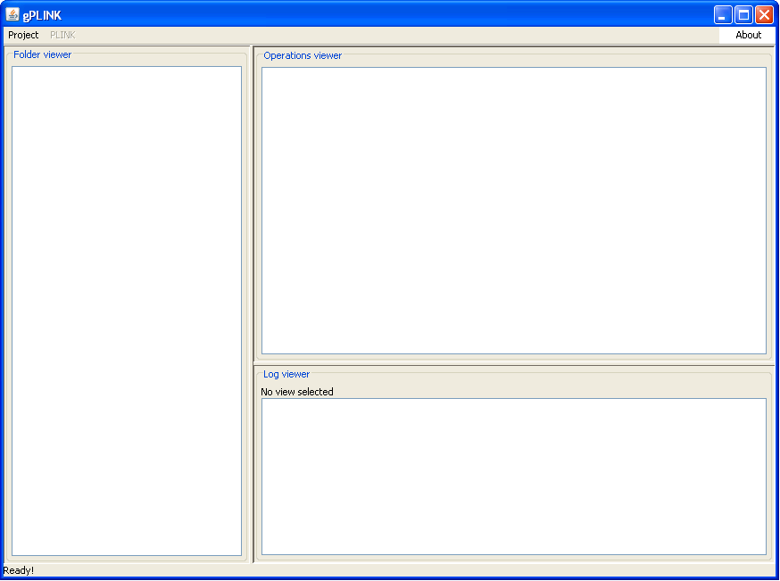

|  |
Introducing gPLINKThis is the screen you will see upon opening gPLINK. The top right panel tracks each PLINK operation, representing the command line and the input and output files as a tree. The top left panel shows the files contained in the PLINK project folder. The bottom panel shows the LOG file from any one particular PLINK run.Return to gPLINK page | Next |